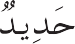
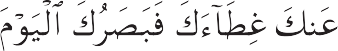

Ketahuilah, manusia tidak diciptakan secara main-main atau sembarangan. Ia diciptakan dengan sebaik-baiknya dan demi tujuan yang mulia. Meski bukan bagian dari Yang Kekal, ia hidup selamanya; meski jasadnya rapuh dan membumi, ruhnya mulia dan beri sifat ilahi. Melalui tempaan zuhud, ia suci kan dirinya dari nafsu jasmani dan menca pai tingkatan tertinggi, tidak menjadi budak nafsu, dan meraih sifat-sifat malakut. Ia te mukan surganya dalam perenungan tentang Keindahan Abadi dan tak lagi memedulikan kenikmatan badani. Kimia ruhani yang mam pu menghasilkan perubahan seperti ini, la yaknya kimia yang mengubah logam biasa
menjadi emas, tak mudah ditemukan. Buku ini ditulis untuk menjelaskan kimia ruhani tersebut beserta metode operasinya.
Khazanah ilahi yang menuturkan kimia ini terkandung dalam hati para nabi. Siapa saja yang mencarinya di tempat lain pasti akan kecewa dan terpuruk di hari berbangi kit, ketika dikatakan kepadanya:

... Telah Kami angkat tirai itu darim mu, dan pandanganmu pada hari ini sangatlah tajam. (Q. 50:22)
Allah telah mengutus ke dunia ini 124 ribu orang nabi untuk mengajar manusia tentang resep kimia ini dan bagaimana cara menyucikan hati mereka dari sifat-sifat hina melalui zuhud. Jadi, secara ringkas dapat di katakan bahwa Kimia Kebahagiaan adalah berpaling dari dunia untuk menghadap ke pada Allah. Kimia Kebahagiaan terdiri atas empat elemen, yaitu pengetahuan tentang diri, pengetahuan tentang Allah, pengetahuan tentang dunia sebagaimana adanya, dan
pengetahuan tentang akhirat sebagaimana adanya.
Mari kita jelajahi satu demi satu keemi pat elemen tersebut.[]